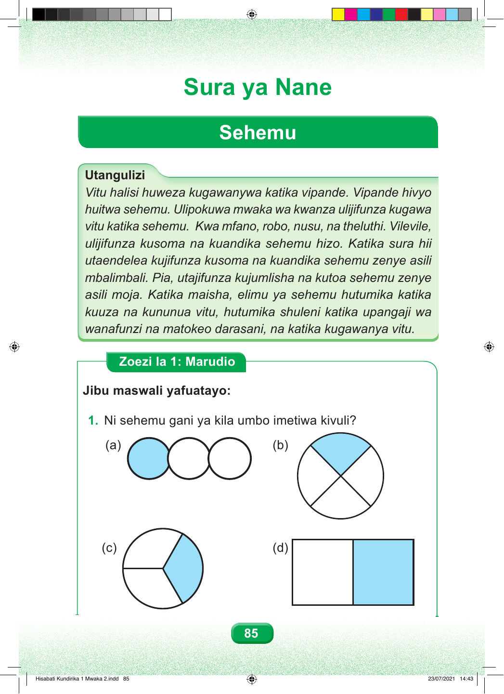

Sura ya Nane Sehemu Utangulizi Vitu halisi huweza kugawanywa katika vipande. Vipande hivyo huitwa sehemu. Ulipokuwa mwaka wa kwanza ulijifunza kugawa vitu katika sehemu. Kwa mfano, robo, nusu, na theluthi. Vilevile, ulijifunza kusoma na kuandika sehemu hizo. Katika sura hii utaendelea kujifunza kusoma na kuandika sehemu zenye asili mbalimbali. Pia, utajifunza kujumlisha na kutoa sehemu zenye asili moja. Katika maisha, elimu ya sehemu hutumika katika kuuza na kununua vitu, hutumika shuleni katika upangaji wa wanafunzi na matokeo darasani, na katika kugawanya vitu. Zoezi la Kwanza: Marudio Jibu maswali yafuatayo: 1. Ni sehemu gani ya kila umbo imetiwa kivuli? Umbo a lina maduara matatu, na duara moja limetiwa kivuli. Sehemu iliyotiwa kivuli ni theluthi moja. Umbo b ni duara lililogawanywa katika sehemu nne sawa, na sehemu moja imetiwa kivuli. Sehemu iliyotiwa kivuli ni robo moja. Umbo c ni duara lililogawanywa katika sehemu tatu sawa, na sehemu moja imetiwa kivuli. Sehemu iliyotiwa kivuli ni theluthi moja. Umbo d ni mstatili uliogawanywa katika sehemu mbili sawa, na sehemu moja imetiwa kivuli. Sehemu iliyotiwa kivuli ni nusu. 85 Hisabati Kundirika 1 Mwaka 2.indd 85 23/07/2021 14:43